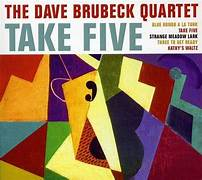
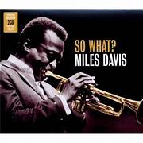
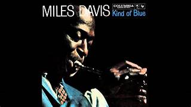

Pagina listado discos de Jazz
Isaac Latorre
Dave Brubeck - Take Five
«Take Five» es una composición de jazz creada por Paul Desmond
e interpretada por el grupo The Dave Brubeck Quartet
en su álbum de 1959 Time Out.
So What - Miles Davis (1959)
So What " es la primera canción del álbum Kind of Blue de 1959
del trompetista estadounidense Miles Davis .
Es uno de los ejemplos más conocidos de jazz modal ,
ambientado en el modo dórico y compuesto por 16 compases de D Dorian, seguidos de ocho compases de E ♭ Dorian y otros ocho de D Dorian.
Blue in Green-Miles Davis
" Blue in Green " es la tercera canción del álbum de 1959 de Miles Davis , Kind of Blue .
Una de las dos baladas del LP (la otra es " Flamenco Sketches "),
la melodía de "Blue in Green" es muy modal , incorporando la presencia de los modos dórico , mixolidio y lidio .